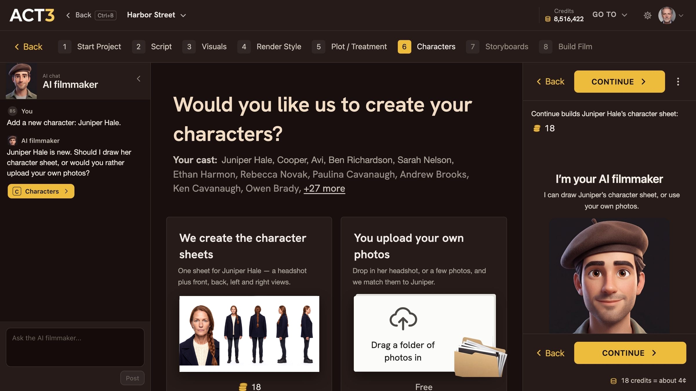

Step 4 of 8
Choose We create the character sheets
ACT 3 AI asks how to make Juniper's look. Choose We create the character sheets: 18 credits, about 4¢. Click Continue to start building.

What this page asks
After you add a character, ACT 3 AI asks one question in the open: Would you like us to create your characters? Nothing is chosen for you. Your cast is listed under the question, with Juniper first.
Your decision: ACT 3 AI draws the look, or your photos
We create the character sheets (this guide). Pick it when the character is invented and you want ACT 3 AI to cast the face from your description. It builds one sheet: the headshot plus front, back, left and right views.
You upload your own photos. Pick it when you already know the face: an actor's headshot or your own reference art. Uploading is free. That path is guide 8, Character from Photos.
The price, before anything runs
The left card shows 18 with the coin mark, and the panel on the right says it again: Continue builds Juniper Hale's character sheet: 18, with 18 credits = about 4¢ at the bottom. That is one character sheet on the default image model. Credits are held while it works and charged only when it succeeds; a failed build is not charged.
Where you go next
With the left card chosen, click Continue › (top or bottom of the right panel). Juniper's page opens and her sheet starts building.